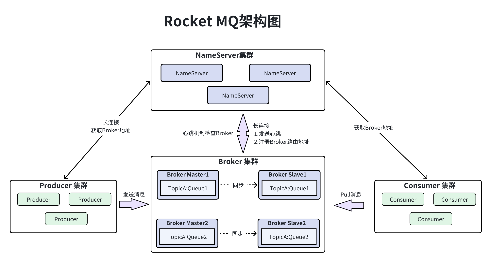
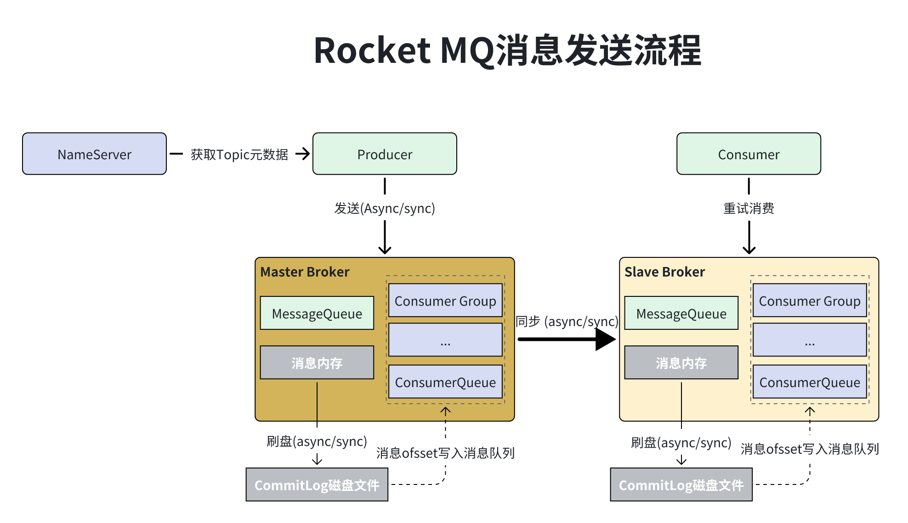
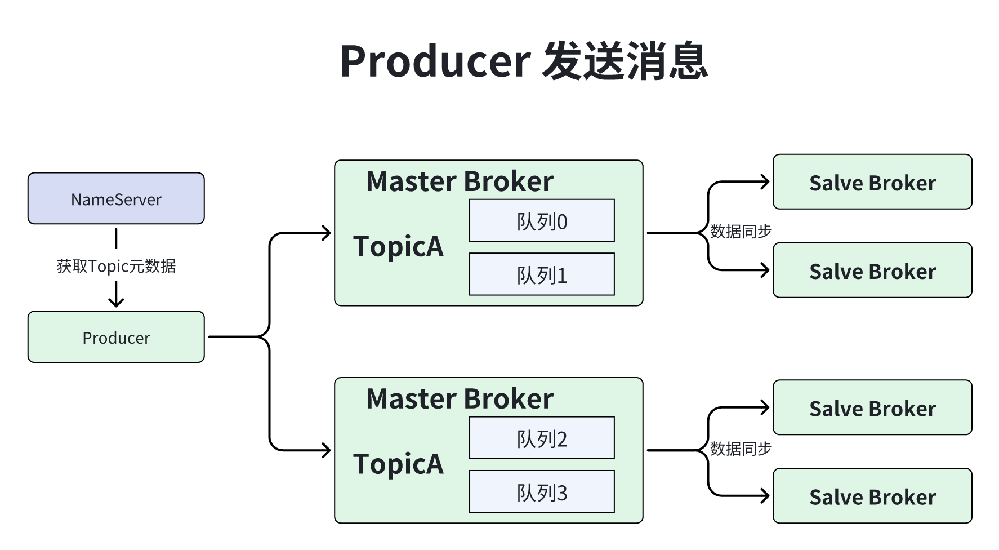
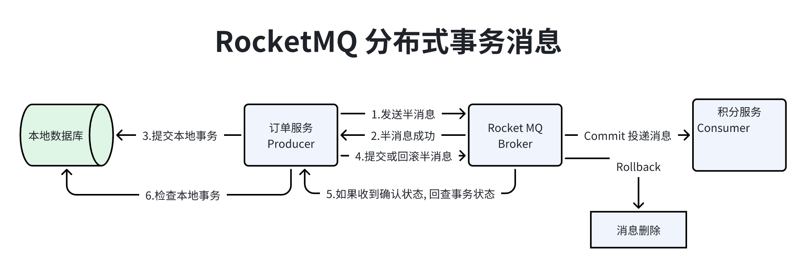
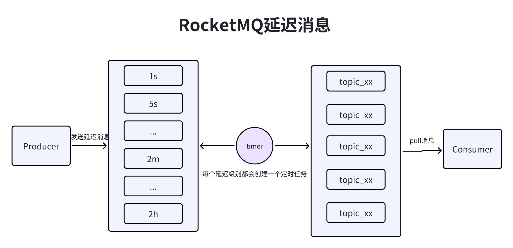

基础介绍
x1介绍: RocketMQ是阿里云开源的一套高性能;高吞吐量;低延迟;高可用;高可靠的分布式消息中间件, 在阿里内部被叫做MetaQ. (借鉴kafka设计)2
3官网: https://github.com/apache/rocketmq4
5应用场景: 6 -> 应用解耦. 7 -> 削峰填谷.8 -> 数据分发: 让数据在多个系统之间进行流通.9 10特性:11 -> 订阅发布: Producer向Topic发送消息, Consumer从Topic中消费消息.12 -> 顺序消费: 同一类消费者可以按照消息发送的顺序来进行顺序消费.13 -> 过滤消息: 通过tag来过滤消息. 在Broker端进行过滤减少Consumer压力. 14 -> 消息可靠: Rocket支持消息的高可靠, 但是还是会存在消息丢失.15 -> 消息重试: RocketMQ会对消息至少投递一次, Consumer先Pull消息, 然后在ack到Broker. 如果Broker没有收到Ack就会对消息进行重试.16 -> 消息回溯: 针对持久化消息, RocketMQ会将消息保存在磁盘上方便以后消息的重发.17 -> 事务消息: RocketMQ支持事务消息, 通过本地事务和发送消息操作, 被定于到全局事务中, 来实现分布式事务, RocketMQ的事务消息提供类似X/Opem/XA的分布式事务功能, 通过事务消息达到分布式事务的最终一致性.18 -> 定时消息: 就是延迟消息, 发送到的消息会到一定时间之后才会被Consumer端拿到进行消费.19 -> 流量控制: 当Producer和Consumer达到设置的阈值流量时, 可以进行流量控制.20 --> Producer流控实现: commitLog文件被锁时间超过设置的osPageCacheBusyTimeoutMills时(默认1000ms), 发生流控, 如果transientStorePoolEnable配置为true, 并且Broker为异步刷盘的主机, 且transientStorePool中资源不足, 会拒绝当前的send请求, 发生流控.21 --> Broker流控实现: Broker每隔10ms检查send请求队列头部请求的等待时间, 如果超过waitTimeMillsInSendQueue配置的时长(默认200ms), 会拒绝当前的send请求.22 --> Consumer流控实现: Consumer本地缓存消息数超过配置的pullThresholdForQueue(默认1000ms)或者Consumer本地缓存的消息大小超过了配置的pullThresholdSizeForQueue(100MB)或者本地缓存的消息存在时间超过了配置的consumeConcurrentlyMaxSpan(默认2000ms)时, Consumer会降低拉取频率.23 -> 死信队列: 将无法被正常处理(消费重试次数达到了最大的重试次数)的消息丢在一个特殊的队列中, 可以通过console来对死信队列中的消息进行重发来进行再一次消费.24

111角色介绍:2 -> NameServer: 路由服务, 类似于kafka中的zk, 主要存储了Broker的路由信息, 供Producer和Consumer使用, 3 不然Producer怎么知道往哪个Broker发送消息, 多个NameSever之间是互相独立且没有通信的, 每个NameSever都会保存所有路由信息.4 -> Broker: 部署RocketMQ进程的服务被称之为Broker, Broker会接收Producer的消息. 持久化到本地, 然后Comsumer通Pull的形式进行消息拉取, 通常使用集群+主从进行的形式进行部署, 主从之间会有数据同步.5 -> Producer: 生产者, 即发送消息的一方, 往Master Broker中写入数据.6 -> Consumer: 消费者, 即消费消息的一方, 从Master Broker和Slave Broker中获取数据, 一般采用群组的形式部署来提高消费性能.7 -> Topic: 翻译过来就是主题的意思, 但它其实是个抽象概念, 我们可以理解成数据集合, 8 比如订单系统有一个Topic叫topic_order_info, 这个Topic里面就是订单系统投递的订单信息, 如果其他系统想要获取订单信息, 就可以从这个Topic中获取.9 -> MessageQueue: 消息队列, 在创建Topic的时候会让我们指定MessageQueue的数量, 即Topic中的消息队列数量. 10 这些队列会被RocketMQ均衡的分布在不同Broker上, Producer在发送消息时会根据一定策略选择一个消息队列进行发送, 这样就可以实现负载均衡和提高吞吐的效果.11

191架构特点:2 -> NameServer: 在消息发送中, 主要作用是注册Broker路由信息.3 --> 思考: 那么NameServer怎么跟Broker;Producer和Consumer进行通信的? 4 --> 回答: Broker会和每个NameServer建立TCP长连接, 每隔30s发送心跳信息, 每个NameServer每10s检查一次哪些Broker超过120s没有发送心跳, 5 如果有的话, 就认为该Broker宕机, 会从路由信息中删除, Producer如果要向Broker发送信息, 必须要知道Broker的路由信息(ip,port), 6 所以需要会随机选择一个NameServer并建立TCP长连接来获取Broker路由信息, 然后根据topic的元数据获取绑定的Broker上发送信息, 在根据负载均衡算法发送到其中的一台Broker上.7
8 -> Broker: 在消息发送过程中, 起到了存储;接收;分发消息的作用, 为了保证Broker高可用一般会部署Master-Salve模式, 9 Master Salve之间通过指定相同BrokerName, 根据BrokerId=0是Master, 非0表示Slave, Master也可以部署多个, 每个Broker都会与NameServer集群中的所有节点建立长连接, 定时注册Topic元数据到所有的NameServer上.10
11 -> Producer: Producer随机与NameServer集群中的一个节点建立长连接, 定期从NameServer获取Topic路由信息, 12 Producer在和Topic绑定的所有的Broker建立长连接, 每隔30s发送心跳信息到Broker, Broker每隔10s扫描一次当前无注册的Producer. 13 如果Producer超过2分钟没有收到心跳会断开连接, Producer完全无状态, 可集群部署.14 15 -> Consumer: Consumer随机与NameServer集群中的一个节点创建长连接, 定期从NameServer获取Topic路由信息, 16 Consumer跟Broker是长连接, 每隔30s发送心跳信息到Broker, Broker每隔10s检查一次当前存活的Consumer, 如果发送2分钟内没有心跳, 17 则断开与该Consumer的连接, 并向Consumer Group的其他实例发送通知, 会触发该Consumer Group的再平衡.18 Consumer可以从Master订阅消息, 也可以从Slave订阅消息, 订阅规则由Broker配置决定.19

401思考: 生产者如何发消息? 2回答: Producer首先通过NameServer获取指定的Topic的Broker路由信息, Producer会根据MessageQueueSelector的具体实现(默认均匀写入)3 把消息发送到其中一个MessageQueue中, 这样就可以把Producer的请求分散到不同的Broker, 就可以实现更高的并发.4
5思考: Broker宕机怎么办? 6回答: 如上图所示, 如果第二个Master Broker宕机, 虽然Salve会自动切换成master, 但在切换过程中是不对外提供服务的.7 可以配置Producer中的sendLatencyFaultEnable配置为true来解决这个问题, 容错机制, 访问一个Broker有500ms的延迟还无法访问, 8 接下来会回避访问该Broker一段时间(默认3000ms), 来避免消息打到故障的Broker上. 9
10消息持久化:11 -> 介绍: 消息持久化是RocketMQ最核心的环节, 它决定了生产者消息写入的吞吐量, 决定了消息会不会丢失, Consumer获取消息的吞吐量.12 Broker的消息持久化以来于两个文件CommitLog和ConusmerQueue, 当Broker收到一条消息后, 首先会把该消息顺序写入磁盘文件CommitLog中. CommitLog就是很多磁盘文件, 每个文件最大1GB, 当文件写满之后会重新建一个.13 -> CommitLog文件结构:14 序号 消息存储结构 备注 长度15 1 TOTALSIZE 消息大小 416 2 MAGICCODE 消息magic code: daa320a7 417 3 BODYCRC 消息体body crc,broker重启校验 418 4 QUEUEID 队列编号queueId 419 5 FLAG 不处理 420 6 QUEUEOFFSET 自增值不是偏移量代表消息数量 821 7 PHYSICALOFFSET 消息commitLog中的物理其实地址偏移量 8 22 8 SYSFLAG 消息标记指明消息状态 823 9 BORNTIMESTAMP 生产端消息时间戳 824 10 BORNHOST 生产者地址 825 11 STORETIMESTAMP 存储时间戳 826 12 STOREHOST 消息存储在broker的地址(ip+port) 827 13 RECONSUMETIMES 消息被消费组重新消费的次数 828 14 Prepared Transaction Offset prepared状态的事务消息 829 15 BODY 消息体 前4字节存消息size后存body 4+bodyLength30 16 TOPIC 前1字节存topic 名称size后存内容 1+topicLength31 17 properties 前2字节存属性大小 后存数据 2+length32 -> 思考: Consumer怎么知道从CommitLog具体读取哪个消息?33 -> 回答: 在Broker中, 每个MessageQueue都有一系列的ConsumerQueue文件, CommitLog消息偏移量就在这个里边存储, 34 当Broker收到一条消息时, 会把消息内容存在CommitLog磁盘文件中, 把消息的偏移量存在MessageQueue中.35 -> MessageQueue结构:36 CommitLog Offset Size Message Tag Hashcode37 8Byte 4Byte 8Byte38 ConsumerQueue文件一条数据是20字节, 最多存放30w数据文件最大5.72M, 存储之后就会创建新的文件, 39 因此Topic的每个MessageQueue都对应了多个ConsumerQueue.40
121订阅规则: RocketMQ存在2种订阅规则, 集群模式;广播模式. 2 -> 集群模式:一条消息在一个消费组中只能被一台服务器给消费.3 -> 集群模式原理: RocketMQ有一个MessageQueue分配算法, 默认会把MessageQueue平均分配给每个Consumer, 4 且只会分配给一个Consumer, 因为Consumer每次读取消息的时候, 会把最后一条消息的Offset保存在Broker上, 5 下次读取会根据上次保存的Offset进行消息的读取, 如果多个消费者读取同一个队列, 就会导致偏移量保存的时候被覆盖, 导致消息被重复消费.6 -> 广播模式: 一条消息在一个消费组中被所有机器都被消费. 7
8消费方式: RocketMQ支持PUSH和PULL2种方式. 2种方式的本质都是Consumer主动从Broker上拉取消息.9 -> PUSH: Consumer会主动从Broker拉取消息, 只不过它实时性很高, 看着像Broker在Push一样. 是通过"长轮询"10 方式实现的, 当消费者发起请求到Broker, 如果没有消费的话就会把线程挂起(默认15s), 在此期间有一个后台线程每隔一段时间就去检查一下是否有新的消息, 如果有就唤起线程.11 -> PULL: 就是Consumer定时的从Broker拉取消息.12

101介绍: 相当于本地事务来说, 分布式事务为了满足跨数据源或跨服务的事务场景. 上图展示了RocketMQ在分布式事务中的应用, 满足CAP中的AP, 并保证最终高可用.2 3流程: 本地服务先发一个半消息, 这个消息是不能被Consumer给消费到的, 然后执行本地事务, 根据本地事务执行的结果来Commit还是Rollback. 4 如果Commit这个消息就能被Consumer给消费.5 如果Rollback这个消息被彻底删除.6
7执行原理: RocketMQ做法是如果消息是半消息, 将备份原消息的主题与消息消费队列吗, 然后改变主题为RMQ_SYS_TRANS_HALF_TOPIC.8 由于消费组未订阅该主题, 故消费端无法消费半消息(half Message). 然后二阶段会显示执行Commit或者Rollback半消息, 9 当然, 为了防止二阶段操作失败, RocketMQ会开启一个定时任务, 从Topic为RMQ_SYS_TRANS_HALF_TOPIC中拉取消息进行消费, 根据生产者组获取一个服务提供者发送回查事务状态请求, 根据事务状态来决定是提交或回滚消息.10 
131介绍: 生产者把消息发送到消息队列中以后, 并不期望被立即消费, 而是等待指定时间后才可以被消费, 这类消息通常被称为延迟消息.2
3分析: 延时消息是一种很常用的业务场景, 在RocketMQ中, 只支持特定级别的延迟消息, 但是不支持任意时间精度的延迟消息. 4 如果要支持任意时间精度, 不能避免在Broker层面做消息排序, 再涉及到持久化的考量, 那么消息排序就不可避免产生巨大的性能开销. 在RocketMQ中, 消息延迟级别分别为1s 5s 10s 30s 1m 2m 3m 4m 5m 6m 7m 8m 9m 10m 20m 30m 1h 2h, 共18个级别. 5
6工作流程:7 -> 1.如果消息的延迟级别大于0, 则表示该消息为延迟消息, 修改该消息的主题为SCHEDULE_TOPIC_XXXX, 队列Id为延迟级别减1.8 -> 2.消息进入SCHEDULE_TOPIC_XXXX的队列中.9 -> 3.定时任务根据上次拉取的偏移量不断从队列中取出所有消息.10 -> 4.根据延时级别的时间, 筛选出已经到期的消息.11 -> 5.根据消息属性重新创建消息, 清除延迟级别, 恢复原主题和队列Id.12 -> 6.重新发送消息到原主题的队列中, 供消费者进行消费.13
81介绍: 对于RocketMQ中的同一个队列, 消息的到达顺序决定了消息的消费顺序(FIFO), 但是RocketMQ是无法保证全局消息的有序性, 2 原因是如果读写队列有多个, 消息就会存储在多个队列中, 消费者负载时可能会分配到多个消费队列同时进行消费, 多队列并发消费时, 无法保证消息消费顺序性. 所以是针对同一个队列如何实现顺序消息.3
4实现方式: 队列选择器(MessageQueueSelector)可以帮助我们将顺序消息发送到同一个消息队列上, 我们仅仅在消息发5 送的过程实现MessageQueueSelector接口的select方法, 在select方法中根据订单ID选择消息队列即可.6
7注意: 保证订单消息发送到同一个消息队列之后, 还需要保证顺序消息, 在RocketMQ中MessageListenerOrderly自带此实现, 如果使用MessageListenerConcurrently则需要使用单线程模式.8 81顺序写CommitLog和顺序读CousumerQueue: 发送消息时, 消息是顺序写入CommitLog, 区别于Kafka的不同topic分区消息会存储在不同日志文件中, 2 RocketMQ的Commitlog文件存储了多个topic的数据, 这样就不会随着topic的增加导致IO竞争带来的吞吐量下降；3 订阅消息时, 消费者端也是顺序读取ConsumeQueue, 然后根据其中的起始物理位置的offset到CommitLog读取消息。4
5MessageQueue分布策略: RockectMQ在创建topic时会制定MessageQueue的数量, MessageQueue类似kafka的分区均匀分布在不同broker上, 生产者发送消息时, 会根据策略选择MessageQueue, 实现负载均衡提高吞吐量.6 7零拷贝技术: RocketMQ默认使用mmap技术来实现消息的读取和写入, 减少消息在内存态和用户态之间的拷贝和上下文切换次数.8
91同步异步复制: RocketMQ的同步异步复制是通过Broker的配置文件中的brokerRole参数进行设置的, 2 这个参数可以被设置成ASYNC_MASTER;SYNC_MASTER;SLAVE三个值中的一个. 3 -> ASYNC_MASTER: 表示的是当前Broker的角色是一个异步复制的master, 生产者写入消息到Master后无需等待消息复制到Slave即可返回;4 -> SYNC_MASTER: 表示当前的Broker的角色是一个同步复制的master, Master写入完消息之后, 需要等待Slave的复制成功, 但是这边注意这里只需要有一个Slave复制成功并成功应答即算成功;5 -> SLAVE: 表示的是当前Broker是一个Slave.6
7同步异步刷盘: RocketMQ的同步异步刷盘是通过Broker配置文件里的flushDiskType参数设置的, 这个参数被设置成SYNC_FLUSH;ASYNC_FLUSH.8 -> SYNC_FLUSH: 表示同步刷盘.9 -> ASYNC_FLUSH: 表示异步刷盘.